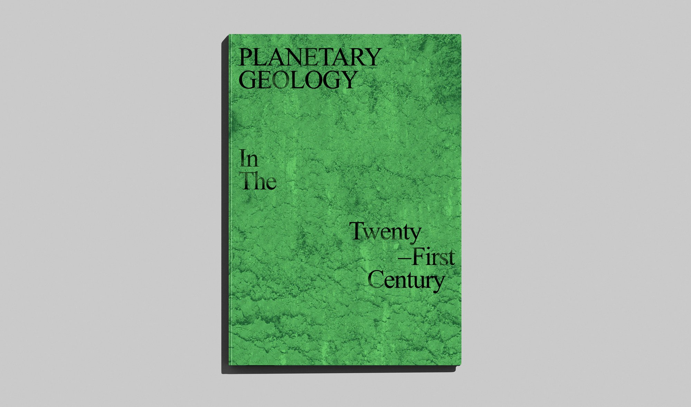
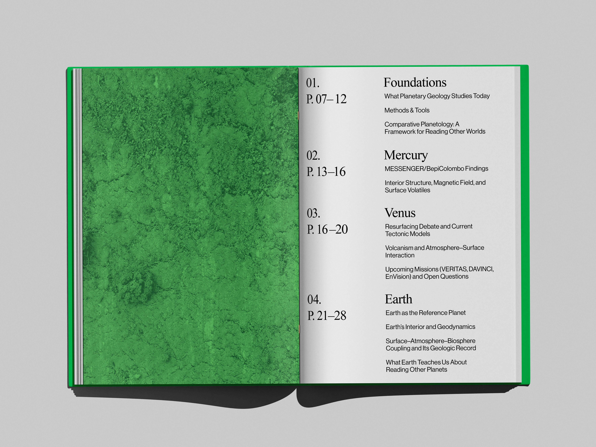
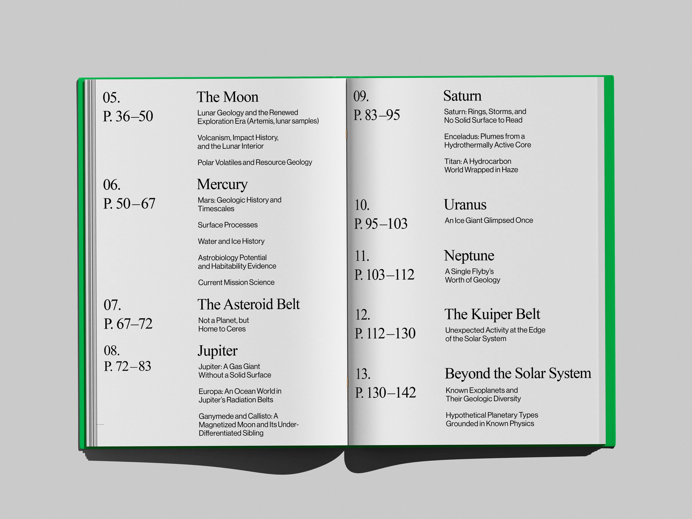
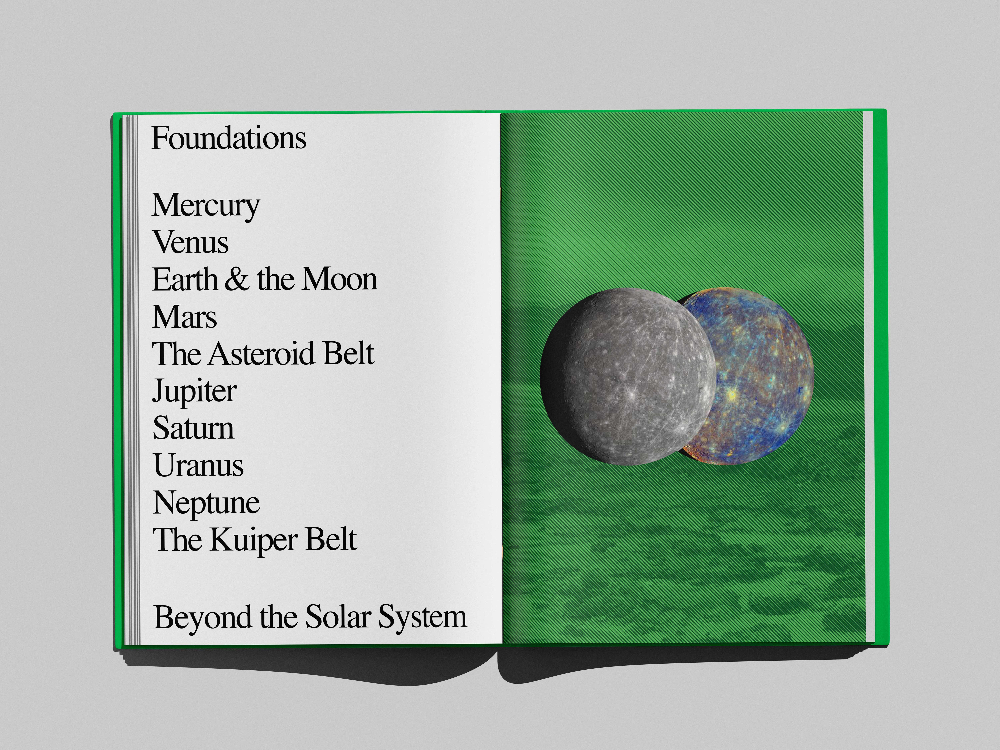
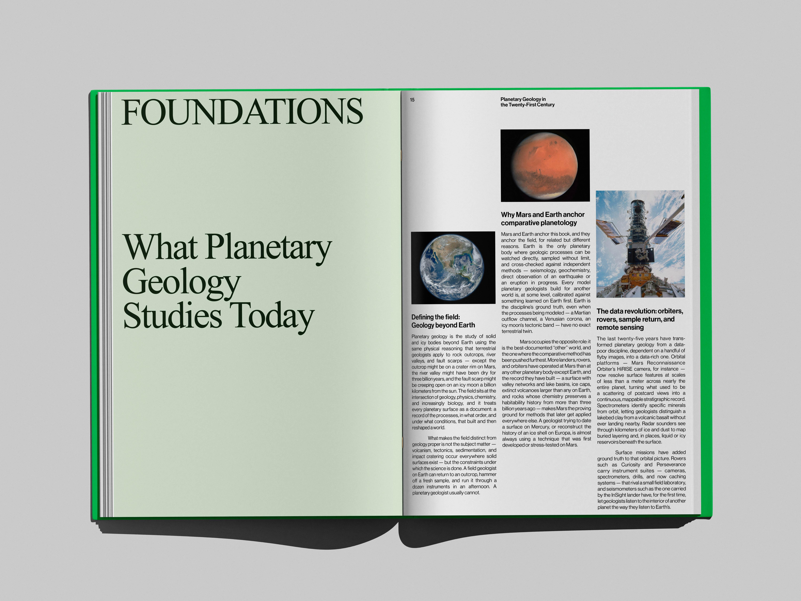
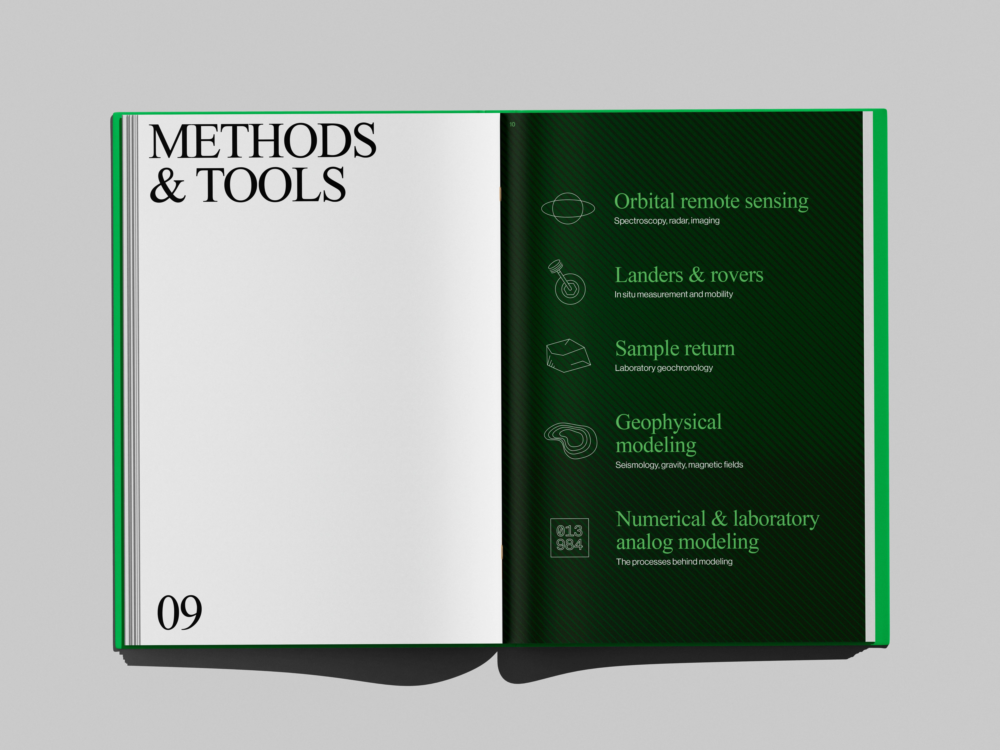
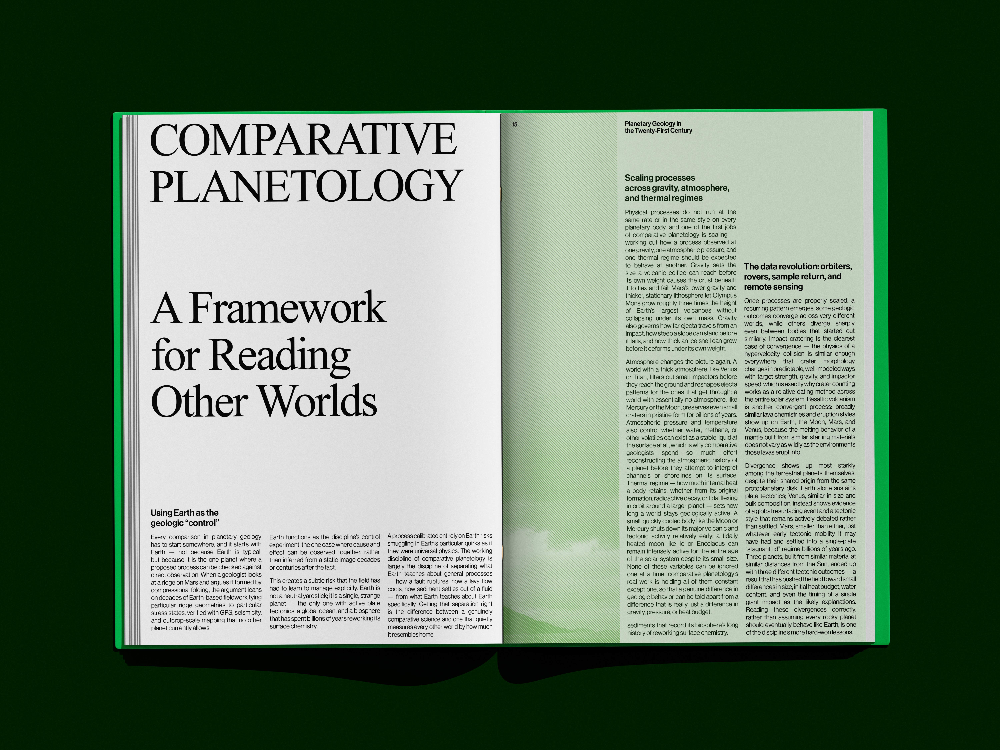
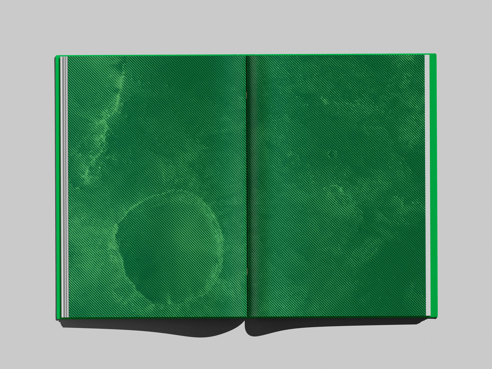
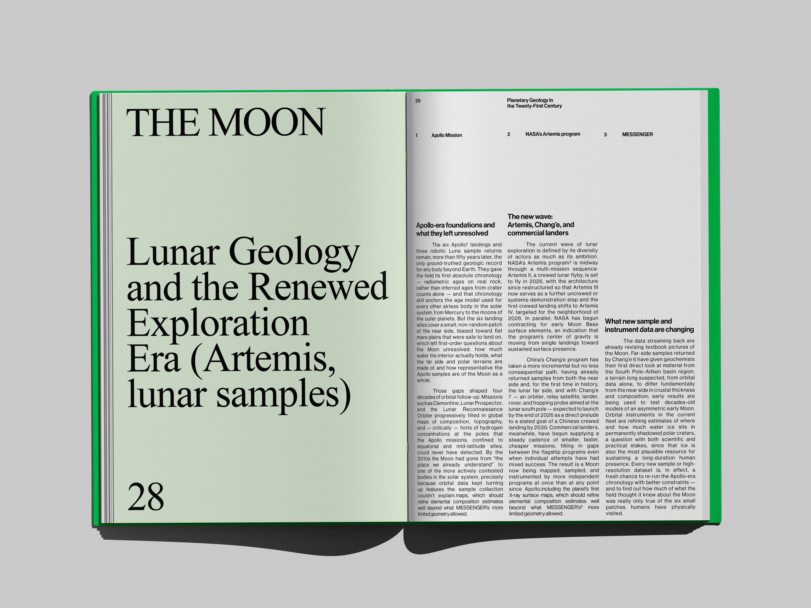

EditorialPrint
Planetary geology studies the surfaces and interiors of solid worlds beyond Earth, using the same field methods geologists apply to rock outcrops and fault scarps here, extended to orbital imagery, rover data, and returned samples. The field has moved quickly over the past two decades, with new missions to the Moon, Mars, and the outer solar system steadily replacing old assumptions with direct measurement. This book, written by planetary geologist Michael Phillips, gathers that research into a single up-to-date reference, moving chapter by chapter from Mercury and the inner planets out through the gas giants, the ice giants, and the Kuiper Belt.







